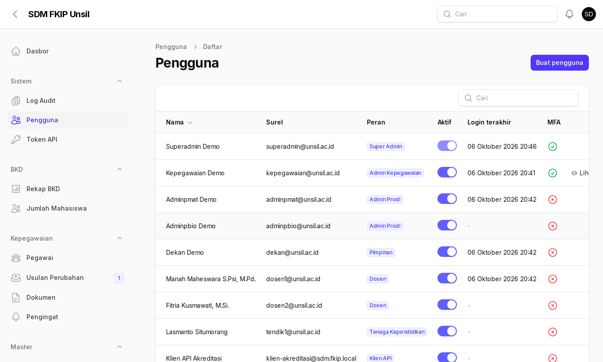
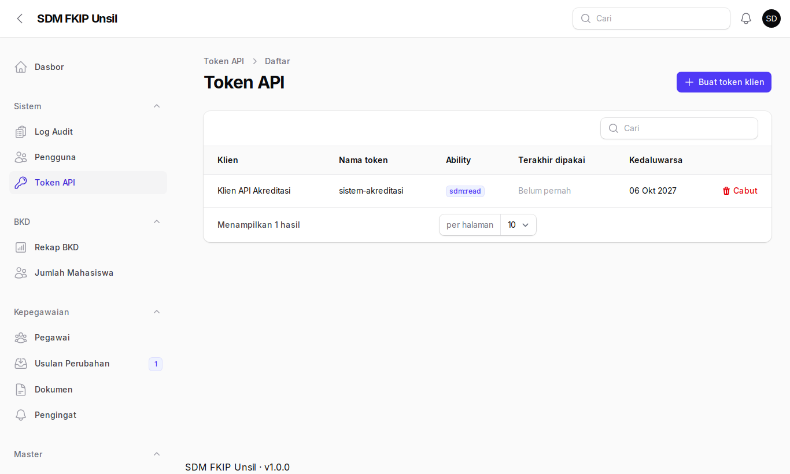
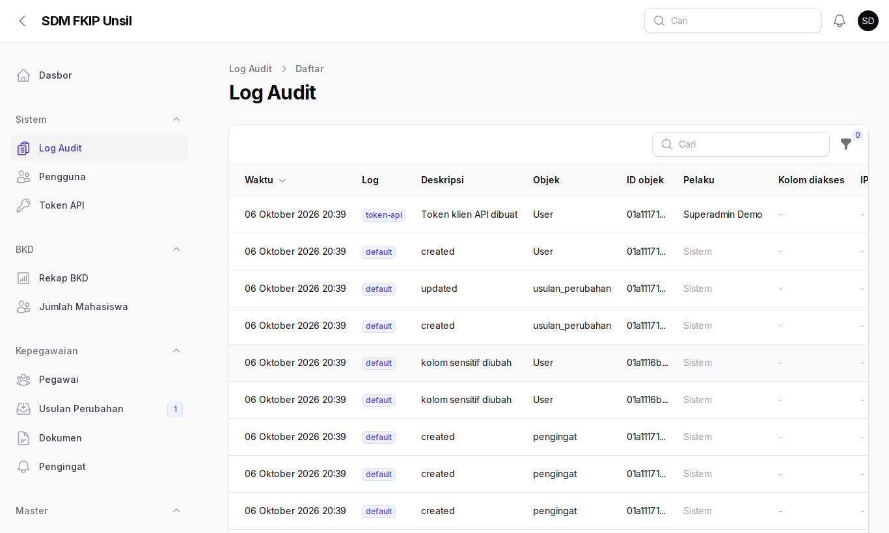
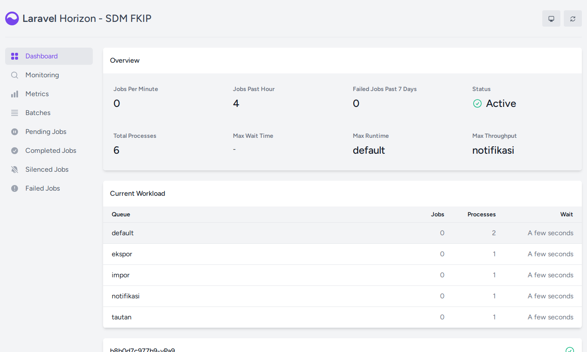

Panduan Super Admin / Operator
Pengelolaan akun, token API, audit, dan pemantauan sistem.
1. Masuk dan MFA
Super Admin wajib memakai MFA, sama seperti Admin Kepegawaian.

2. Pengguna
Sistem → Pengguna: kelola akun, peran, prodi, dan status aktif (nonaktifkan akun bermasalah).

3. Token API
- Sistem → Token API → Buat token klien; isi nama klien, nama token, dan masa berlaku.
- Salin token yang tampil sekali pada jendela konfirmasi.
- Cabut token dari tabel bila bocor atau tidak dipakai.

Dokumentasi endpoint ada di
docs/API.md (autentikasi Bearer, ability sdm:read, 60 permintaan/menit).4. Log audit
Mencatat perubahan data, ekspor, tampil data sensitif, dan pembuatan/pencabutan token.

5. Horizon (antrean)
Buka /horizon (di server produksi: /sdm/horizon). Pastikan lima supervisor aktif dan tidak ada job gagal; ulangi job gagal dari tab Failed Jobs.

Panduan operasi lengkap:
docs/OPERASI.md; deploy: docs/DEPLOY.md; backup: docs/PEMULIHAN.md.